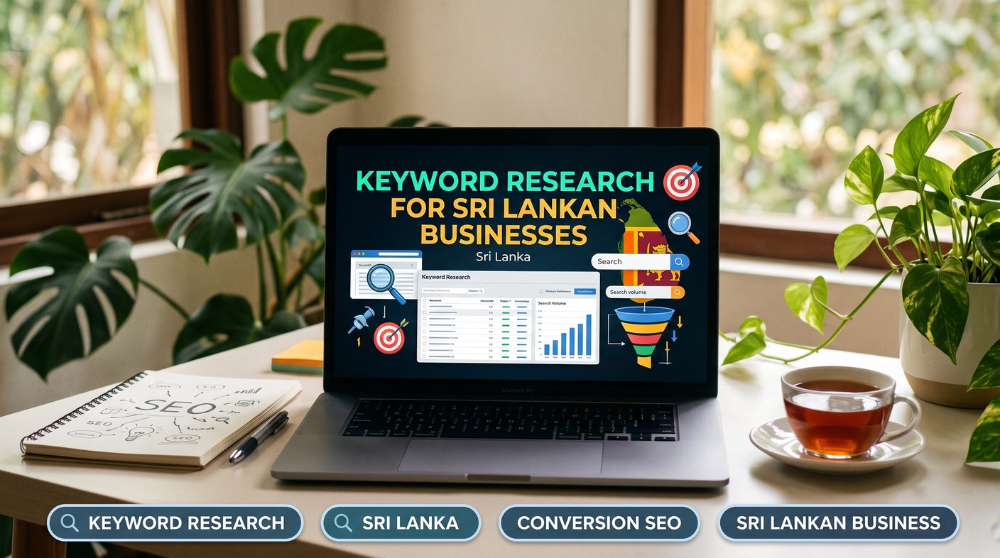

Keyword research for a Sri Lankan business means listing what customers search for, expanding it with locations, languages and buying modifiers, then judging each term by search intent, competition and conversion potential rather than volume alone. Group the keywords by topic, give each group one page, and track clicks and enquiries in Google Search Console.
- What is keyword research in SEO?
- Why keyword research matters for Sri Lankan businesses
- Step 1: Understand your target customers
- Step 2: Build a list of seed keywords
- Step 3: Find keywords relevant to Sri Lanka
- Step 4: Use keyword research tools
- Step 5: Evaluate search volume, competition and business value
- Step 6: Choose long-tail keywords that convert
- Step 7: Analyse competitors without copying them
- Step 8: Group keywords by topic and search intent
- Step 9: Turn keyword research into a content plan
- Step 10: Measure keyword performance and refine your strategy
- Common keyword research mistakes to avoid
- Keyword research checklist for Sri Lankan businesses
- Conclusion: find keywords that support business growth
What is keyword research in SEO?
Keyword research is the process of identifying and analysing the words and phrases people type into search engines when they look for information, products or services. It shows you what customers need so you can build website content that answers those needs.
A business offering SEO in Sri Lanka might target a broad term such as "SEO", or more specific searches such as "SEO company in Sri Lanka" and "SEO services for small businesses in Sri Lanka". Each represents a different level of intent, so the right term depends on what the page is for.
Effective keyword research connects what people search for with what your business can genuinely provide.
Why keyword research matters for Sri Lankan businesses
Search behaviour varies by location, language, industry and customer need. A keyword strategy built for a global audience may not reflect how customers in Sri Lanka search for local businesses.
1. Reach customers who need your services
Relevant keywords help your site appear for searches connected to your offer. A web development company may attract more qualified enquiries by targeting "website development company Sri Lanka" than by relying on the broad term "web design".
2. Attract visitors with buying intent
Not every searcher is ready to buy. Someone searching "what is accounting software" wants to learn, while someone searching "accounting software price Sri Lanka" is probably comparing options. Knowing the difference tells you which landing page each audience needs.
3. Compete more effectively in local search
Small and medium-sized businesses can find realistic local opportunities instead of fighting for every broad, highly competitive keyword. Location phrases help when you serve particular towns, districts or regions, and our local SEO service builds on exactly this research.
4. Improve content planning
Keyword research gives you ideas for service pages, blog articles, FAQs and supporting guides. It also stops several pages from targeting the same search intent for no clear reason.
Step 1: Understand your target customers
Before opening a keyword tool, decide who you want to reach. Consider what they need, which problems they face, which solutions they compare and what they ask before buying.
A restaurant owner looking for a point-of-sale system may search for POS software, billing systems, inventory management or restaurant order management. A business selling POS software should research all of these related needs rather than a single generic phrase.
Start by answering these questions:
- Which products or services generate revenue for your business?
- Who makes the purchasing decision?
- What problems push customers to look for a solution?
- Which locations do you serve?
- What questions do customers ask before contacting you?
- What makes your offer different from competitors?
Your answers are the foundation for keywords that attract relevant visitors and support business growth.
Step 2: Build a list of seed keywords
Seed keywords are the starting terms that describe your business, products, services and customer problems. They lead you to more specific search phrases.
A Sri Lankan digital marketing agency might begin with these seed keywords:
- SEO services
- SEO consultant
- keyword research
- website development
- Google Business Profile optimization
- e-commerce SEO
Then expand each seed by adding service types, locations, customer categories and buying modifiers. "SEO services" could lead to "SEO services in Sri Lanka", "SEO consultant in Colombo", "local SEO services" and "SEO services for e-commerce websites".
These are keyword ideas, not verified search-volume figures. Use keyword research tools to confirm real demand and competition before you finalise your targets.
Step 3: Find keywords relevant to Sri Lanka
When researching keywords in Sri Lanka, consider the geographic areas, languages and terminology your customers actually use.
Use location-based keywords
If you serve customers nationwide, research national phrases such as "SEO company Sri Lanka". If you operate locally, also research terms that include your town or service area.
A business serving Kurunegala might investigate "web design Kurunegala" or "SEO services Kurunegala" (see our Kurunegala SEO page for an example), while a Colombo business might research equivalent phrases for its own area, as on our Colombo SEO page. The full list of areas is on our service areas page.
Only target locations where you can genuinely deliver the service. Creating many near-identical location pages with no useful local information weakens the overall quality of your website.
Research Sinhala, Tamil and English searches
Sri Lankan customers search in different languages depending on preference, industry and habit. Some use English technical terms, others search in Sinhala or Tamil, and many mix local-language phrases with English product names.
Researching these variations can reveal audiences an English-only strategy would miss. But language targeting should reflect what your customers actually need, not a word-for-word translation of every English keyword.
Read our guide to Sinhala, Tamil and English SEO to see how multilingual search optimisation supports your visibility.
Step 4: Use keyword research tools
Keyword tools help you discover related phrases, estimate demand, compare opportunities and understand how people search. Use more than one source where practical, because keyword databases and estimates differ.
Google Keyword Planner
Google Keyword Planner generates keyword ideas and shows estimated search-volume ranges and advertising competition. Set the location to Sri Lanka when researching the local market, and remember that advertising competition is not the same as organic SEO difficulty.
Google Search Console
If your website already gets organic traffic, Google Search Console shows the queries that earn impressions and clicks. Use it to find terms your pages already appear for, queries that deserve dedicated content and pages whose titles need work. See our SEO case studies for how Search Console query data guided real client projects.
Google search results
Search your target terms and study the pages Google ranks. Note the result types, common subtopics, local listings and questions searchers want answered. This shows the likely intent behind each query.
SEO research platforms
Tools such as Ahrefs and Semrush help analyse keyword variations, competitor rankings, estimated volumes and organic competition. Treat their metrics as estimates, not exact measurements of Google search activity.
Step 5: Evaluate search volume, competition and business value
Search volume is useful, but it should never be the only factor. A phrase with modest demand may bring more valuable enquiries than a broad term that attracts thousands of visitors who will never buy.
Search volume
Search volume estimates how often a keyword is searched over a period. In a smaller market such as Sri Lanka, specialised business keywords may show low reported volumes. That does not make them unimportant.
Keyword difficulty
Keyword difficulty is a third-party estimate of how hard a term may be to rank for. Review the actual results, the competing sites, their content quality and their authority rather than trusting a single score.
Search intent
Work out whether users want information, a specific website, a comparison or a product or service (see our search intent guide). Your content should satisfy the intent behind the search instead of forcing a keyword into an unsuitable page.
Conversion potential
Assess how closely the keyword relates to a meaningful business outcome, such as a purchase, quotation request, phone call or consultation booking.
Use a simple table to organise your research:
| Keyword | Likely intent | Potential page |
|---|---|---|
| What is SEO? | Informational | Educational blog article |
| SEO services Sri Lanka | Commercial or transactional | SEO service landing page |
| SEO consultant Sri Lanka | Commercial investigation | Consultant or service page |
| SEO service prices Sri Lanka | Commercial investigation | Pricing or service guide |
These classifications are illustrative. Confirm the intent by examining the current search results for each query. For the pricing example, see our SEO cost in Sri Lanka guide.
Step 6: Choose long-tail keywords that convert
Long-tail keywords are more specific phrases that describe a particular need. They usually have lower search volume than broad terms, but their specificity makes them valuable for attracting the right audience.
A company selling business software could compare these phrases:
- "software"
- "business management software Sri Lanka"
- "cloud POS system for retail shops Sri Lanka"
- "restaurant billing software with inventory management"
The longer phrases tell you far more about what the searcher wants. If your product genuinely meets that need, they may be your best opportunities.
Look for modifiers such as "price", "cost", "best", "near me", "for small business", "with inventory" and "service provider". How useful each one is depends on your industry and the language your customers really use.
Step 7: Analyse competitors without copying them
Competitor research reveals search topics, content gaps and keyword opportunities you may have missed. Start with businesses that compete for the same customers, not only sites in the same industry.
- Identify the businesses that appear in Google for your target keywords.
- Review their service pages, blog topics, headings and internal links.
- Use SEO tools to see which keywords their pages appear to rank for.
- Identify relevant topics your website does not cover well.
- Create more useful content based on your own expertise and customer needs.
Do not assume every keyword a competitor uses is valuable to you. Some are irrelevant, commercially unsuitable or too difficult to justify. Third-party competitor data is also an estimate, not a complete record of their traffic.
Step 8: Group keywords by topic and search intent
Once you have collected ideas, organise them into related groups. This makes it easier to decide which terms belong on existing pages and which deserve new content.
An SEO company could group its research like this:
- SEO services: SEO company Sri Lanka, SEO consultant Sri Lanka, SEO service prices.
- Technical SEO: technical SEO audit, website crawl errors, Core Web Vitals optimization. See our technical SEO audit checklist.
- On-page SEO: on-page SEO checklist, title tag optimization, meta description writing. See our title tag and meta description guide.
- Content strategy: keyword research, SEO content planning, search intent.
- Multilingual SEO: Sinhala SEO, Tamil SEO, multilingual website optimization.
Assign each group to the most suitable page. A commercial keyword often suits a service page, while a question-based keyword is usually better answered by a comprehensive guide. Our on-page SEO service and on-page SEO checklist cover how to optimise each page for its assigned group.
Before creating a new URL, check whether an existing page already satisfies the same intent. Improving an existing resource is often more effective than publishing a competing article.
Step 9: Turn keyword research into a content plan
Keyword research creates value when it guides a practical publishing and optimisation plan. For each keyword group, define the target page, audience, intent, content requirements and desired conversion. Our SEO content strategy service turns this into a full roadmap, and our SEO content calendar guide shows how often to publish.
A simple plan might include:
- A main service page targeting a high-value commercial keyword.
- Supporting guides answering related informational questions.
- Case studies demonstrating real results where evidence exists.
- FAQs addressing common objections and purchasing questions.
- Internal links connecting each article to the main service page.
For example, an article about keyword research can link to your keyword research service page when readers want professional help, and multilingual content can link to your Sinhala, Tamil and English SEO resource. These connections help visitors find useful information and help search engines understand how your pages relate.
Step 10: Measure keyword performance and refine your strategy
Keyword research is ongoing. Search behaviour, competitors, customer needs and results pages all change, so review performance regularly.
Track these indicators:
- Organic impressions: how often your pages appear in search results.
- Organic clicks: how many visits come from search results.
- Click-through rate: the percentage of impressions that become clicks.
- Search positions: how your target pages perform for relevant queries.
- Conversions: enquiries, calls, purchases or other meaningful actions.
Google Search Console measures search visibility and clicks, while website analytics and correctly configured conversion tracking show visitor behaviour and business outcomes.
Do not judge a keyword by ranking position alone. A page with fewer visitors that generates qualified leads can be worth more than one with plenty of irrelevant traffic.
Common keyword research mistakes to avoid
- Choosing only high-volume keywords: demand does not automatically become revenue.
- Ignoring search intent: a blog article cannot always replace a service page for a transactional query.
- Targeting too many keywords on one page: focus on a coherent topic and its close variations.
- Creating duplicate pages: several pages competing for the same intent confuse users and complicate optimisation.
- Ignoring local language preferences: research the language and terms your actual audience uses.
- Trusting tool estimates blindly: validate metrics against search results, Search Console data and business outcomes.
- Forgetting conversions: measure whether traffic supports real business goals.
- Keyword stuffing: use relevant phrases naturally and put clear, useful content first.
Keyword research checklist for Sri Lankan businesses
Before finalising your keyword strategy, make sure you can answer yes to each of these:
- Have you identified your most profitable products and services?
- Have you researched customer problems and buying questions?
- Have you investigated relevant Sri Lankan locations and languages?
- Have you checked keyword demand and organic competition?
- Have you assessed search intent and conversion potential?
- Have you reviewed relevant competitors and existing search results?
- Have you grouped related keywords into clear topic clusters?
- Have you assigned each group to the most appropriate page?
- Have you identified useful internal linking opportunities?
- Have you set up a process for measuring results?
Conclusion: find keywords that support business growth
Effective keyword research in Sri Lanka means understanding customers, identifying relevant search opportunities and connecting those searches to useful website content. Search volume matters, but intent, competition, language, location and conversion potential matter just as much when deciding what to target.
By combining keyword tools with competitor analysis, local market knowledge, search intent analysis and performance tracking, you can build a focused SEO strategy: a website that attracts not just visitors but the right people looking for what you offer.
If you want help finding valuable keywords and turning them into a practical plan, explore our keyword research services. If you serve audiences in several languages, our Sinhala, Tamil and English SEO guide covers multilingual visibility, and an SEO specialist in Sri Lanka can apply both to your business.